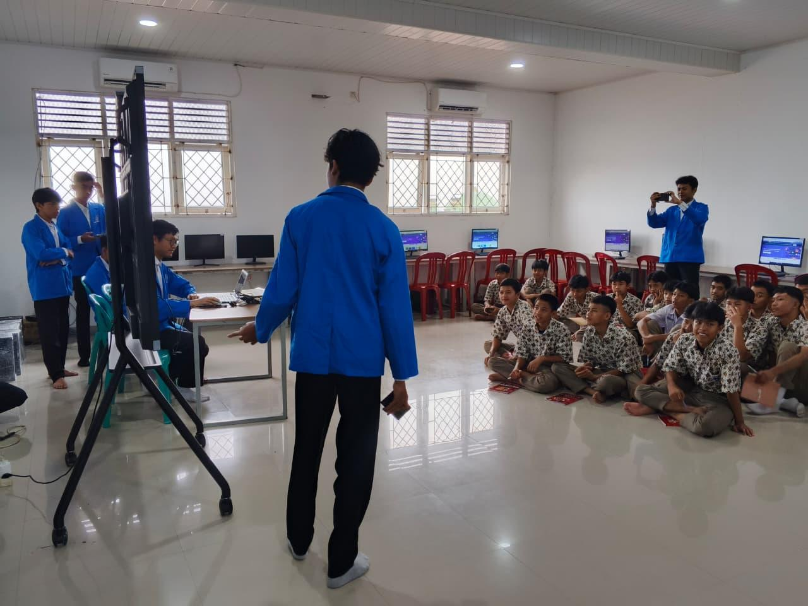

Kriuk Bareng - Spicy Snack Business Development
PKM 1 | Course: Entrepreneurship | Semester 1 | 2024Developed a spicy snack business "Kriuk Bareng" from planning to execution. Created Business Plan, Business Model Canvas, financial analysis, and branding. Successfully sold 31 out of 42 products at Entrepreneur Fair, generating Rp170,000 in revenue and Rp88,000 in profit.
Community Cleanup at Taman Heulang Bogor
PKM 2 | Role: Team Leader | May 2025 | 8 Team MembersLed a community service program to clean Taman Heulang Bogor. Coordinated 8 team members to collect waste, educate visitors, and improve park cleanliness. Achieved cleaner park environment and increased community awareness about environmental care.

Scratch Programming Training for SMK IBG 3 Students
PKM 3 | Role: Instructor & Material Developer | November 2025 | 10 Team MembersDelivered programming training using Scratch to 50+ SMK IBG 3 students. Taught computational logic, block-based coding, and interactive game development. Achieved +65% improvement in Scratch proficiency and +50% increase in problem-solving skills and student interest in coding.
Anti-Corruption Education in Islamic Perspective
PKM 4 | Role: Co-Speaker & Coordinator | May 2026 | 5 Team MembersConducted anti-corruption education for SMAN 1 Rancabungur students. Delivered interactive sessions on corruption types, impacts, and integrity values through lectures, quizzes, and case studies. Increased student awareness of honesty and moral responsibility in daily school life.
Business Intelligence Training Using Power BI
PKM 5 | Role: Practice Instructor & Helper | April 2026 | 10 Team MembersTrained 24 RPL students at SMK Akbar Alqi Bogor on Power BI for data analysis. Taught ETL process, DAX formulas, and dashboard design using retail dataset. Delivered hands-on workshop on data visualization, resulting in interactive sales dashboards and increased data literacy.